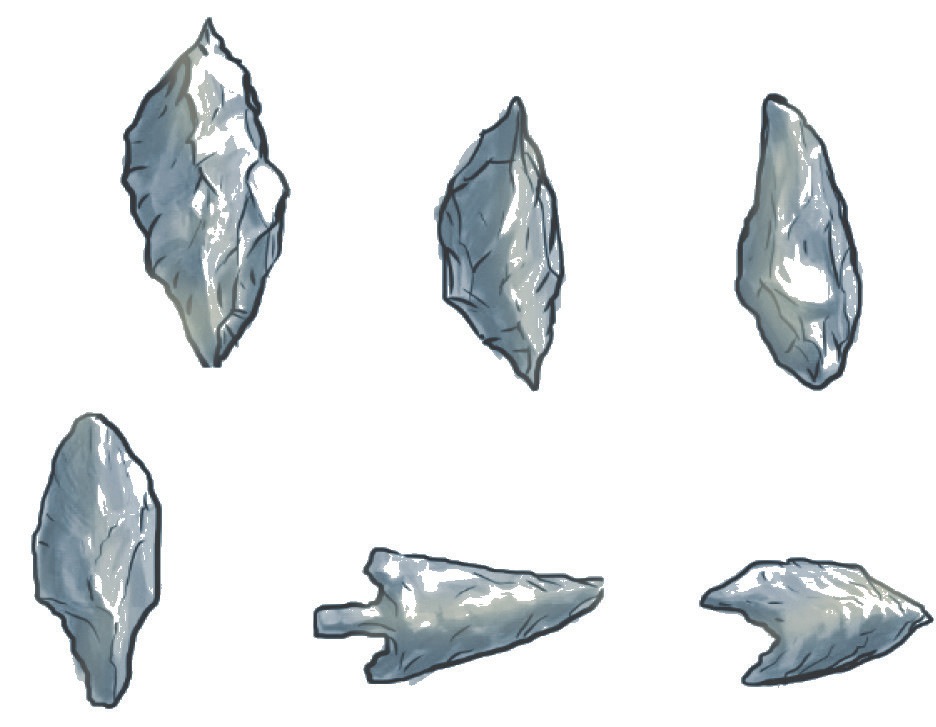

The Late Stone Age witnessed major cultural and technological improvements. For example, fishing communities settled near Lakes Edward, Rudolf, Victoria and along River Nile by 6000BCE. Such fishermen used barbed bone points and harpoons for fishing. Examples of the Late Stone Age sites in East Africa are Mumba rock shelter, Nasera rock shelter; Gambles Cave and Enkapune ya Muto in Kenya; and Magosi in Uganda. The first evidence is the presence of large quantities of remains of tools in those areas and large quantities of fish, fowl and animal bones. The second piece of evidence is drawings and paintings in caves and rocks that show hunting and other activities of settled communities. The paintings indicate that the Late Stone Age societies held religious beliefs, made religious symbols, and decorated their bodies.
Physical changes of human beings during the Late Stone Age
During the Late Stone Age, human beings had smaller teeth than it was during other stone ages. The teeth were adapted to eating softer food and had a large brain capacity of about 1300 – 1450cc. The shape of the skull was similar to that of modern human beings. By this time, human beings walked upright on two legs and had less body hair. In addition, they had smaller brows, high forehead, little facial projections, light-built jaws, and smaller limb bones.
Major changes in human beings during the Late Stone Age
Late Stone Age societies depended on hunting, gathering, fishing, and farming. The most important hunting weapons were bows and arrows. Sometimes arrows were coated with poison to kill animals such as antelopes, buffaloes, elephants, and others. They hunted a wide range of small and large animals. They processed skins and used them as clothes. They also engaged in fishing from rivers and lakes. In addition, women gathered fruits and nuts. They also dug up edible roots and tubers using digging sticks.